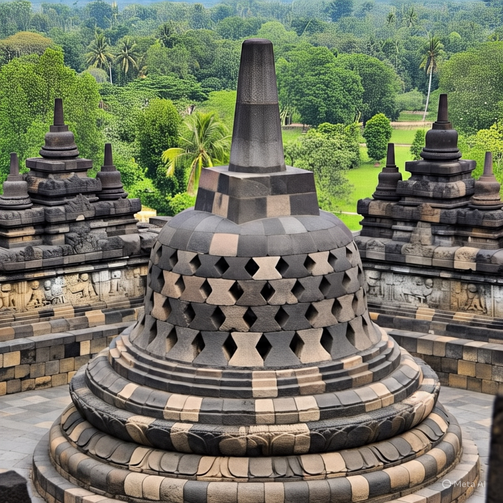

Borobudur adalah salah satu situs warisan budaya yang paling terkenal di Indonesia. Terletak di Magelang, Jawa Tengah, Borobudur adalah sebuah candi Buddha yang dibangun pada abad ke-9 Masehi. Candi ini tidak hanya merupakan simbol kebudayaan dan spiritualitas Indonesia, tetapi juga merupakan salah satu contoh arsitektur yang paling indah dan kompleks di dunia. Borobudur dibangun pada masa pemerintahan Dinasti Sailendra, yang merupakan salah satu dinasti yang paling berpengaruh di Jawa pada abad ke-9 Masehi. Candi ini dibangun sebagai tempat ibadah bagi umat Buddha, dan juga sebagai simbol kekuatan dan kekuasaan Dinasti Sailendra. Borobudur memiliki arsitektur yang sangat unik dan kompleks. Candi ini terdiri dari enam tingkat, yang masing-masing memiliki bentuk dan fungsi yang berbeda. Tingkat pertama adalah tingkat dasar, yang merupakan fondasi candi. Tingkat kedua hingga keenam adalah tingkat yang memiliki relief dan patung Buddha. Borobudur memiliki lebih dari 2.600 relief dan 504 patung Buddha. Relief-relief ini menggambarkan kehidupan sehari-hari di Jawa pada abad ke-9 Masehi, serta cerita-cerita Buddha. Patung-patung Buddha ini juga memiliki makna yang sangat dalam, dan merupakan simbol kebijaksanaan dan kesadaran. Borobudur memiliki makna yang sangat dalam dan signifikansi yang sangat besar bagi umat Buddha dan masyarakat Indonesia. Candi ini merupakan simbol kebudayaan dan spiritualitas Indonesia, dan juga merupakan contoh arsitektur yang paling indah dan kompleks di dunia. Dalam beberapa tahun terakhir, Borobudur telah menjadi salah satu destinasi wisata yang paling populer di Indonesia. Wisatawan dari seluruh dunia datang ke Borobudur untuk melihat keindahan dan keagungan candi ini.Borobudur: Simbol Kebudayaan dan Spiritualitas Indonesia